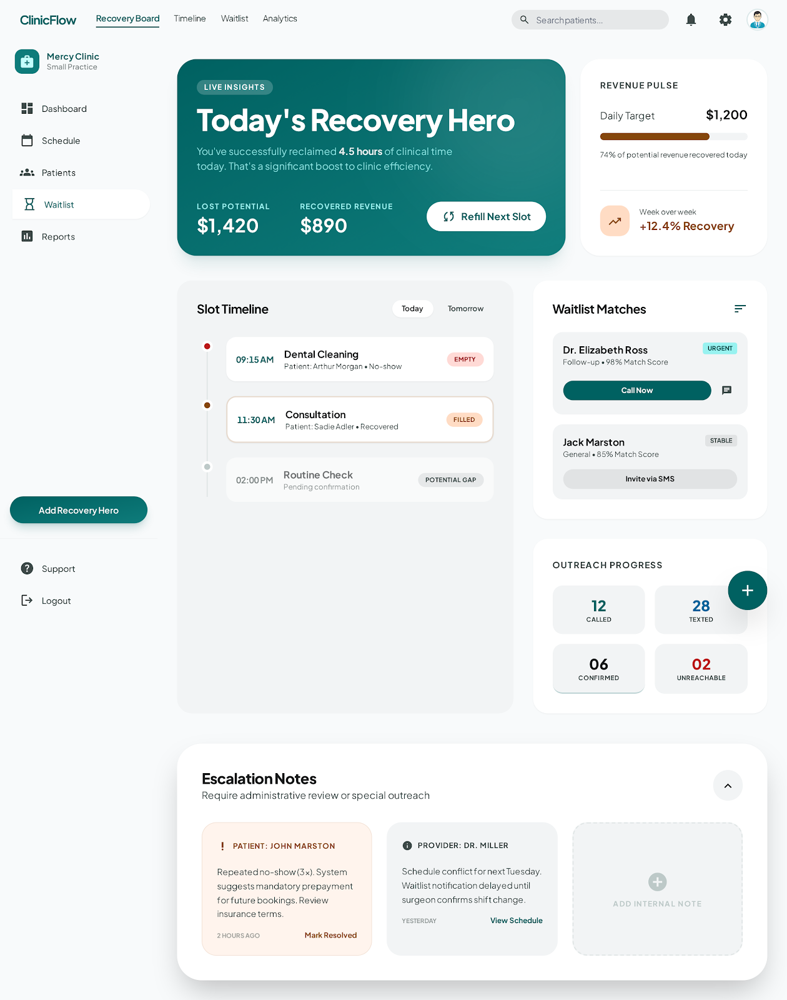

PF SAFE DEMO · 2026-03-24-p002
Clinic No-Show Recovery Board
A clinic recovery screen that helps staff rescue unused appointment slots before revenue disappears.
ingest status
Imported from today’s Stitch exportStitch visual retained locally and wrapped in a stable PF-safe shell so the published demo stays dependency-light and previewable.
- Source sanitized for PF hosting
- No external CDN/font dependency in live demo path
- Preview uses shipped local image artifact
